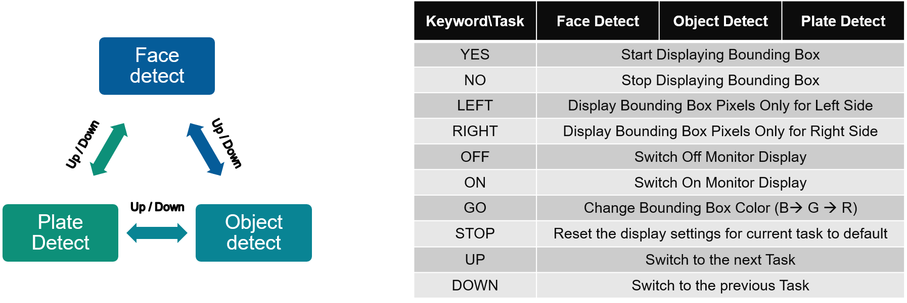

Kria™ KV260 Vision AI Starter Kit NLP SmartVision Tutorial |
Setting up the Board and Application Deployment |
Setting up the Board and Application Deployment¶
Introduction¶
This document shows how to set up the board and run the nlp-smartvision application.
Setting up the Board¶
Flash the SD Card
Download the SD Card Image and save it on your computer.
Connect the microSD to your computer.
Download the Balena Etcher tool (recommended; available for Window, Linux, and macOS) required to flash the SD card.
Follow the instructions in the tool and select the downloaded image to flash onto your microSD card.

Eject the SD card from your computer.
If you are looking for other OS specific tools to write the image to the SD card refer to KV260 Getting Started Page
Hardware Setup:

Monitor:
Before booting, connect the monitor which supports 1024x768 resolution to the board via DP/HDMI port.
Camera sensors:
This application supports the below 3 camera modules
AR1335 sensor module in J7
Raspberry pi sensor module in J9
USB webcam in any of the avaliable USB ports.
Install the required sensor modules in respective locations.
UART/JTAG interface:
For interacting and seeing boot-time information, connect a USB debugger to the J4.
USB Microphone:
Connect the microphone to any of the USB ports. If you USB webcam has a buildin microphone , it will also acts as the USB microphone
Network connection:
Connect the Ethernet cable to your local network with DHCP enabled.
Power on the board, and booting your Starter Kit (Ubuntu):
Follow the instruction from the page below to boot linux
https://www.xilinx.com/products/som/kria/kr260-robotics-starter-kit/kr260-getting-started/booting-your-starter-kit.html
Note: Steps under the section “Set up the Xilinx Development & Demonstration Environment for Ubuntu 22.04 LTS” may not be needed for TSN-ROS demo.
Set System Timezone and locale:
Set timezone
sudo timedatectl set-ntp true sudo timedatectl set-timezone America/Los_Angeles timedatectlSet locale
sudo locale-gen en_US en_US.UTF-8 sudo update-locale LC_ALL=en_US.UTF-8 LANG=en_US.UTF-8 export LANG=en_US.UTF-8 locale
Update Bootfirmware
The SOM Starter Kits have factory pre-programmed boot firmware that is installed and maintained in the SOM QSPI device. Update the Boot firmware in the SOM QSPI device to ‘2022.1 Boot FW’ Image. follow the link below to obtain Boot firmware binary and instructions to update QSPI image using xmutil, after linux boot.
https://xilinx-wiki.atlassian.net/wiki/spaces/A/pages/1641152513/Kria+K26+SOM#Boot-Firmware-Updates
Get the latest NLP application & firmware package:
Add archive for the Xilinx Apps demo
sudo add-apt-repository ppa:xilinx-apps sudo apt update sudo apt upgrade
Search package feed for packages compatible with KR260
sudo xmutil getpkgs
An example output is show below
Searching package feed for packages compatible with: kv260 xlnx-app-kv260-nlp-smartvision/jammy 0.0.20220621.4729324-0xlnx3 arm64 demo application for Xilinx boards - kv260 nlp-smartvision application xlnx-app-kv260-nlp-smartvision/jammy 0.1-0xlnx1 arm64
Install Xilinx demo application packages and dependencies for kv260
Install firmware binaries and restart dfx-mgr
sudo apt install xlnx-firmware-kv260-nlp-smartvision
sudo systemctl restart dfx-mgr.service ```
Note : Installing firmware binaries (xlnx-firmware-kv260-nlp-smartvision) causes dfx-mgr to crash and a restart is needed, which is listed in the known issues section. Once this is fixed an newer updates are available for dfx-manager, restart may not be needed.
Install dependencies and apps
# Install TSN applications below sudo apt install xlnx-app-kv260-nlp-smartvision
Confirm with “Y” when prompted to install new or updated packages.
Add following path in environment variable for Xilinx demo application
export PATH=${PATH}:/opt/xilinx/nlp-smartvision/bin/
Note: consider adding the above commands to ~/.bashrc to avoid executing on every new shell created.
Dynamically load the application package:
The firmware consist of bitstream, device tree overlay (dtbo) file. The firmware is loaded dynamically on user request once Linux is fully booted. The xmutil utility can be used for that purpose.
Show the list and status of available acceleration platforms :
sudo xmutil listapps
Switch to a different platform for different Application:
When there’s already another accelerator/firmware being activated apart from xlnx-app-kv260-pmod-rs485-test, unload it first, then switch to xlnx-app-kv260-nlp-smartvision.
sudo xmutil unloadapp sudo xmutil loadapp kv260-nlp-smartvision
Run the Application¶
There are two ways to interact with application, via Jupyter notebook or Command line
Jupyter notebook¶
The system will auto start a Jupyter server at
/home/petalinux/notebooks, with userpetalinux.User need to run following command to install the package shipped notebooks which reside in
/opt/xilinx/share/notebooks/nlp-smartvisionto the folder/home/petalinux/notebooks/nlp-smartvision.$ nlp-smartvision-install.pyThis script also provides more options to install the notebook of current application to specified location.
usage: nlp-smartvision-install [-h] [-d DIR] [-f]
Script to copy nlp-smartvision Jupyter notebook to user directory
optional arguments:
-h, --help show this help message and exit
-d DIR, --dir DIR Install the Jupyter notebook to the specified directory.
-f, --force Force to install the Jupyter notebook even if the destination directory exists.
Please get the list of running Jupyter servers with command:
$ jupyter-server listOutput example:
Currently running servers:
http://ip:port/?token=xxxxxxxxxxxxxxxxxx:: /home/petalinux/notebooksStop the currently running server with command:
$ jupyter-server stop 8888Launch the Jupyter notebook with
rootprivilege using the following command:
sudo jupyter lab --allow-root --notebook-dir=/home/petalinux/notebooks/nlp-smartvision --ip=<ip address> &
// fill in ip-address from ifconfig
Output example:
[I 2021-08-02 15:54:31.141 LabApp] JupyterLab extension loaded from /usr/lib/python3.8/site-packages/jupyterlab
[I 2021-08-02 15:54:31.141 LabApp] JupyterLab application directory is /usr/share/jupyter/lab
[I 2021-08-02 15:54:31.164 ServerApp] jupyterlab | extension was successfully loaded.
[I 2021-08-02 15:54:31.166 ServerApp] Serving notebooks from local directory: /home/petalinux/notebooks
[I 2021-08-02 15:54:31.166 ServerApp] Jupyter Server 1.2.1 is running at:
[I 2021-08-02 15:54:31.166 ServerApp] http://192.168.3.123:8888/lab?token=9f7a9cd1477e8f8226d62bc026c85df23868a1d9860eb5d5
[I 2021-08-02 15:54:31.166 ServerApp] or http://127.0.0.1:8888/lab?token=9f7a9cd1477e8f8226d62bc026c85df23868a1d9860eb5d5
[I 2021-08-02 15:54:31.167 ServerApp] Use Control-C to stop this server and shut down all kernels (twice to skip confirmation).
[C 2021-08-02 15:54:31.186 ServerApp]
To access the server, open this file in a browser:
file:///home/petalinux/.local/share/jupyter/runtime/jpserver-1119-open.html
Or copy and paste one of these URLs:
http://192.168.3.123:8888/lab?token=9f7a9cd1477e8f8226d62bc026c85df23868a1d9860eb5d5
or http://127.0.0.1:8888/lab?token=9f7a9cd1477e8f8226d62bc026c85df23868a1d9860eb5d5
User can access the server by opening the server URL from previous steps with the Chrome browser.
In the notebook, we will explain the usage of app and the commands needed to run live usecase
Command line¶
This allow the user to run “nlp-smartvision” application on CLI. These are to be executed using the UART/debug interface.
Run the following command to launch the application for live audio input via USB microphone. The user needs to be silent for the first few seconds (2.5s apx.) for the application to dynamically decide the noise threshold value as per user’s input device and enviornment. Once you see the following message “Noise Threshold is set. You can start speaking the keywords now..” you are ready to start pronouncing any of the ten keywords (Yes, No, Off, On, Up, Down, Left, Right, Stop, Go).
sudo nlp-smartvision -m
(or)
sudo nlp-smartvision --mipi
The detected keyword will be displayed on the terminal and the corresponding action on the input video stream will be displayed on the monitor, which is connected to the board through DP/HDMI cable.
To print FPS along with the above application use -v or –verbose flag shown in the below command. The FPS is measured as average over 90 consecutive frames. Also the latency of keywords spotting + action is printed while the keyword is detected.
sudo nlp-smartvision -m -v
You should be able to see the video the camera is capturing on the monitor connected to the board
The application starts with facedetect. When there is a face captured by the camera, there should be a blue bounding box drawn around the face, and the box should follow the movement of the face.
Speak the desired keyword into the microphone, application will perform the following assigned tasks as mentioned below.

Note: Google Command dataset has audio clips of 1 second duration. Thus, the expectation by KWS task is that one keyword is spoken within a duration of 1 second. Note: Stop command resets display setting, but does not change monitor on/off mode.
File based Testing and Accuracy Measurement of KWS Only¶
NLP SmartVision provides a mode which is dedicated for testing the accuracy of keyword spotting (no vision task is running during this mode) on pre-recorded audio files. User needs to provide audio files along with a text file that consists of paths to the audio files which are to be tested. The application expects the audio files to be grouped under folders with keyword as the folder name. Thus, the text file will consist of lines with keyword/*.wav paths corresponding to each audio file (example: yes/audio1.wav). For more details please refer Testing Accuracy on Google Command Dataset and Testing Custom Input Audio Files.
The following command tests the audio files listed in the testing_list.txt file.
## Change your dircetory to the dircetory where you have the testing_list.txt file having proper paths to the audio files.
sudo nlp-smartvision -f testing_list.txt
(or)
sudo nlp-smartvision --file-audio testing_list.txt
Testing Accuracy on Google Command Dataset¶
Users can download the open source Google’s speech command dataset for testing the application in file input mode. This dataset consists of pre-recorded audio files for 30 keywords and the audio files that are separated for testing are listed in the testing_list.txt file. Use the following commands on a linux local host machine to download and extract this dataset. These commands also create the datafiles that are required for testing the application with 10 keywords for which the model has been trained.
Tip : You can copy the below commands and create a single script. Then directly execute that script to do all the required steps one after the other.
mkdir Google_dataset
cd Google_dataset
wget http://download.tensorflow.org/data/speech_commands_v0.01.tar.gz
tar -xf speech_commands_v0.01.tar.gz
mkdir keywords
mv -t ./keywords/ on off up down left right yes no stop go
sed -n -e '/down\//p; /go\//p; /left\//p; /no\//p; /off\//p; /on\//p; /right\//p; /stop\//p; /yes\//p; /up\//p ' testing_list.txt > ./keywords/testing_list.txt
find . -maxdepth 1 ! -name keywords -print0|xargs -0 rm -r --
These commands will create a directory with the name Google_dataset/keywords inside the current working directory on your local machine. Now, all the contents inside this keywords directory needs to copied onto to the microSD card which can be done without removing the microSD from board by using scp or via a USB stick. Otherwise remove and connect the microSD card to your local machine and copy the contents and place the microSD card back and boot the board again.
Note : The commands may take few minutes (depending on the internet speed) to download and process the dataset.
Output after running the command for file based testing will also report the accuracy. Sample output on Google Command Dataset is shown below:
Ground truth : yes Predicted : yes
Ground truth : yes Predicted : yes
Ground truth : yes Predicted : yes
=========================================
Number of keywords tested = 2552
Number of keywords detected correctly = 2383
Accuracy = 93.3777%
Testing Custom Input Audio Files¶
The application expects audio file names to be stored as keyword/audio_filename.wav format into the audio files list file. For example, a pre-recorded audio file of keyword ‘yes’ needs to be listed as yes/file_001.wav. The application uses main directory name (‘yes’ in this example) as ground truth to compare against the detected keyword. New line character must be placed after every audio file name to differentiate multiple audio files (even after the last file name). Moreover, audio file needs to be copied to the SD card into the directory from which the application will be invoked. For example, /home/petalinux/keywords/yes/file_001.wav.
The test audio files should have the following specifications:
Sampling rate: 16 kHz
Sample width: 16 bits per sample
Sample encoding: Little endian
Number of channels: 1 (mono)
Supported format: S16_LE (PCM signed 16-bit little-endian)
Audio Length: 1 second
Image based Testing of DPU Only¶
NLP SmartVision provides a mode which is dedicated for testing the Vision models on DPU (no KWS task is running during this mode) on image files. User needs to provide image files along with the AI model thats under test
The following command tests the image files.
sudo nlp-smartvision -t <image.jpg/image.png> <model>
The command returns the metadata along with a jpg fine containing bounding box on the input image
Files structure of the application¶
The application is installed as:
Binary File: => /opt/xilinx/bin
| filename | description |
|---|---|
| nlp-smartvision | Main application |
Script File: => /opt/xilinx/bin/
| filename | description |
|---|---|
| init-isp-smartvision.sh | Configures ISP media nodes to run 1024.768@RGB |
| init-imx-smartvision.sh | Configures RPI media nodes to run 1024.768@RGB |
| nlp-smartvision.app | Application executable |
Jupyter notebook file: => /opt/xilinx/share/notebooks/nlp-smartvision
| filename | description |
|---|---|
| nlp-smartvision.ipynb | Jupyter notebook file for nlp-smartvision demo. |
Next Steps¶
License¶
Licensed under the Apache License, Version 2.0 (the “License”); you may not use this file except in compliance with the License.
You may obtain a copy of the License at http://www.apache.org/licenses/LICENSE-2.0
Unless required by applicable law or agreed to in writing, software distributed under the License is distributed on an “AS IS” BASIS, WITHOUT WARRANTIES OR CONDITIONS OF ANY KIND, either express or implied. See the License for the specific language governing permissions and limitations under the License.
Copyright© 2021 Xilinx